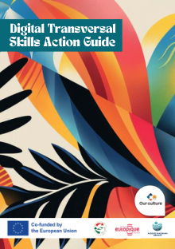
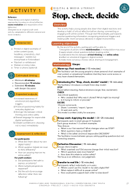
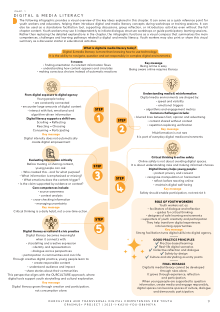
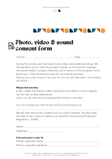

This guide was created to support youth workers, educators and organisations in helping young people navigate, understand and shape digital environments in a meaningful way.
Young people today grow up in a world where digital spaces are not separate from everyday life. They are places where identities are shaped, cultures are expressed, and communities are built. At the same time, these spaces bring new challenges: misinformation, exclusion, ethical dilemmas, and the pressure to constantly produce and share content. In this context, youth work has a key role to play.
Rather than focusing only on technical skills, this guide brings together digital literacy, cultural exploration, storytelling and responsible digital participation. The objective is not only to help young people use digital tools, but to support them in becoming active, critical and creative participants in digital and cultural life.
Understanding how digital environments work, developing critical thinking and safe practices.
Read chapter →Exploring culture beyond stereotypes, observing, interviewing and collecting meaningful cultural material.
Read chapter →Transforming collected material into clear and engaging narratives.
Read chapter →Producing and sharing stories using accessible digital media formats.
Read chapter →Engaging responsibly online, fostering inclusion, ethics and active participation.
Read chapter →The guide is designed to be directly usable in youth work settings, without requiring advanced technical skills or equipment. Activities can be adapted to participants’ language level, digital confidence, access to equipment and support needs.
It is especially relevant for those working with young people aged approximately 15–30, including those with fewer opportunities.
The guide is designed as a flexible and modular tool. We recommend that you start by reading the facilitator tips. It can be used:
Youth workers can:
The approach is based on learning by doing, reflecting and sharing.
Meaningful and responsible digital practices. A key principle throughout the guide is that digital tools should be used with intention and responsibility. This means:
In this perspective, digital practices are not only technical skills, but also ethical, cultural and social practices.
Everything you need to run the workshops, ready to print.
The guide, all activity sheets, the infographics and every resource above, in a single download.

Digital Transversal Skills Action Guide, all chapters, activities and case studies.

The 23 ready-to-use activity sheets of the five chapters, in one PDF or as separate files.


To print and have signed before recording participants.
The full extended checklist for youth, with guidance and exercises.

The project’s global research report (survey and focus groups).
Three sets of interview cards (an object, a tradition, a monument), inspired by the itinerary method of anthropologist Dominique Desjeux.